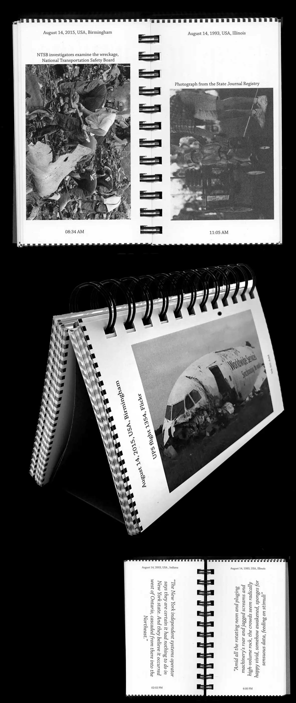

Takes David Foster-Wallace's text as time base, and contrasts his description of a mundane time and
place with other, "news-worthy", depictions of events.



My internship report, the digital version
Firguring out JS and key events in this one.
Some lightly educational games about microplastics. Trying to make something interesting but not really knowing proper JS. Check it out here

A webpage for a speculative cult that worshops thorium, a safer alternative for uranium for nuclear power.